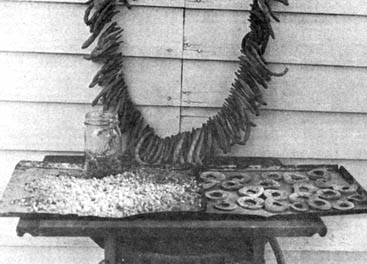

Mid-continent pioneers were mainly English, Scots and Irish whose fathers had followed Boone from the Piedmont across the Appalachian mountains into Tennessee and Kentucky. There, when the war of 1812 broke out, sons and footloose males enlisted to march and fight in Canada. Returning from this fruitless and ill-timed venture, the soldiers were rewarded with land grant bonuses in the newly-opened Arkansas Territory. Many married, started a family and moved west. Some intermarried with the civilized Indian nations-the Cherokees and Creeks-of the Big Smokies.
These pioneers were familiar with wilderness living and at home on the sparsely settled. frontiers of our growing country. Already many, like Boone, were beginning to feel crowded and in need of elbow room and fresh scenery.
The men were hunters and trappers for the most part. Game was plentiful and meat could be had for the shooting at almost every cabin door. Their cash crops were bear skins, bear bacon and bear grease which was used for lubrication, for cooking, as a butter substitute and to slick down rebellious hair. But mainly the frontiersmen were self-sufficient: They mined lead for balls for their muzzle-loading rifles; they made gunpowder from powdered charcoal, sulphur and the saltpeter found in bat caves.
Wives and mothers were capable gardeners and had brought with them bean, pumpkin, turnip and a few other vegetable seeds. And, of course, flowers. They had zinnias, which they called "Old Maids", and balsam, which they knew as "Touch-me-nots" and a living sucker of purple lilac which soon flourished at every cabin door.
Many of the early arrivals came on foot, with pack horses or driving heavy-laden cows. Some even trundled their few household goods in wheelbarrows along the forest traits. Roads, over which oxen could draw covered wagons, had yet to be cleared. Under these conditions, space was at a premium and food supplies had to be light in weight and easily portable. Modern methods of canning in glass jars were still unknown and the diet of fresh meat was supplemented by foods the pioneer wife could preserve by drying. She was amazingly adept at this, and quick to learn new techniques from the Indian women who were her neighbors.
One of the most common dishes bore the colloquial name of "leather-britches." It was simply green beans, patiently threaded on a stout string and dried. The rafters of a well-stocked cabin would be festooned with strands of these dried beans. When the home-maker wished to prepare a meal she had to plan well ahead, for the dried beans needed to be soaked twenty-four hours and longer to soften. They were then cooked with salt and perhaps a chunk of bear bacon or fat-back from a home-butchered hog. Dried shelled beans were, of course, a familiar food, as were cornfield peas (usually the crowder variety of black-eye peas.) Pumpkins were peeled, cut into narrow strips and dried for late winter use beyond the season of cave-stored vegetables and fruits.
The year around staple was corn and every family tried to grow enough to provide meal from one growing season to the next. Times were hard when the corn ran short and, as soon as the fresh crop had reached the firm kernel stage, the pioneer mother used it to make "gritted" or grated bread. This was a delicious pudding-like bread that much resembled the familiar spoonbreads.
Corn was also made into hominy, and hominy was often dried for "grits". Roasting ears were a welcome treat in season and the pioneers learned to preserve this delicacy by cutting the cooked kernels from the cob and drying them. This dried precooked corn could be reconstituted by soaking in water and cooking. The process yielded a delightfully different, caramelized flavor unknown to modern homemakers.
Popcorn was also grown, and one old-timer tells of a great grandmother who used popcorn to prepare a breakfast cereal long before the days of the patented, packaged puffed gains. She popped the corn, ground it coarsely and served it in a bowl with sorghum and rich, spring-cooled cream.
Corn was also the K-ration when game and other foods were scarce and for hunters on prolonged trips. In the War between the States it was nearly standard fare for the hard-fighting Confederates. Corn was (and still is) light, portable, almost non-perishable and easily prepared. It can even be eaten raw: Soaked overnight and parched in a skillet with a bit of bacon or pork fat, this gain made a nourishing and sustaining battle ration for those with sound teeth and stout jaw muscles. And when corn gave out, large sweet acorns were often gathered and parched (see FOOD WITHOUT FARMING in MOTHER NO. 3) as a satisfying substitute. Seeds of apple, peach and pear trees were carried to their new homes by the settlers and soon grew into flourishing, fruitful trees. Apples were peeled, cored, sliced into rings and dried; peaches were simply halved and dried; and pears were similarly treated although usually an effort was made to remove the seeds.
Wild fruits such as strawberries, huckleberries, fox gapes, raspberries, blackberries, sarvis berries, currants and gooseberries were dried and used as we use raisins. They could also be soaked in water and cooked into sauces or made into pies, tarts and cobblers, as were the dried tree fruits. Wild persimmons were gathered in season, carefully pulped and spread out to dry into "persimmon leather." This was a quarter-inch thick, tough, leather-like article (see PERSIMMONS in MOTHER NO. 5) which would keep indefinitely and, when wanted, could be cut into small pieces for soaking and cooking.
|
 leather britches, dried corn and dried apple rings |
|
|